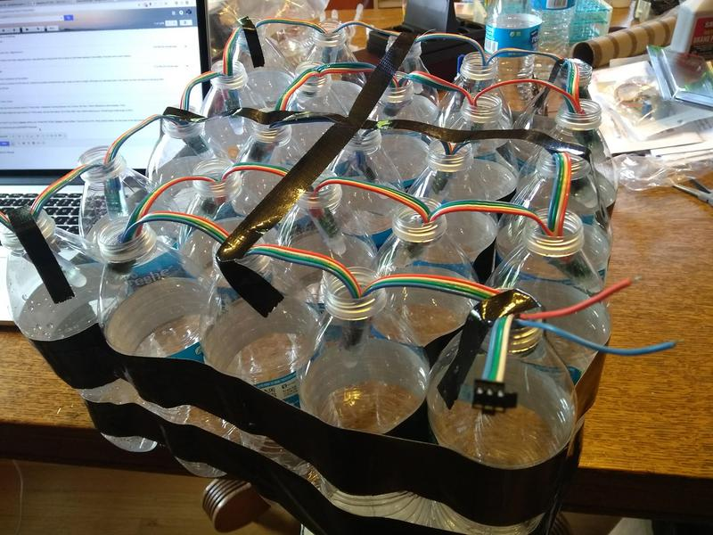
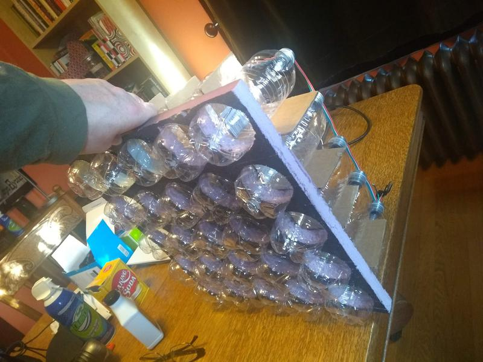
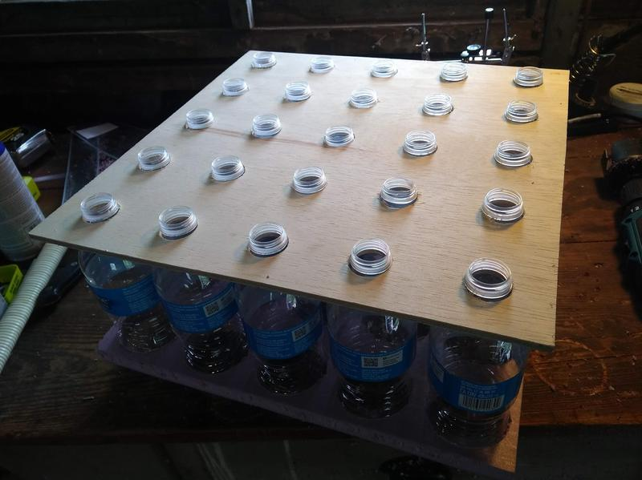
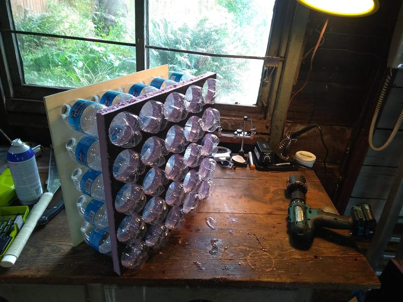
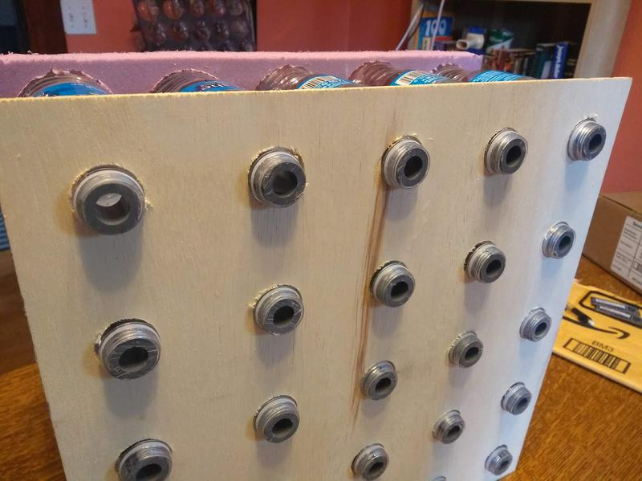
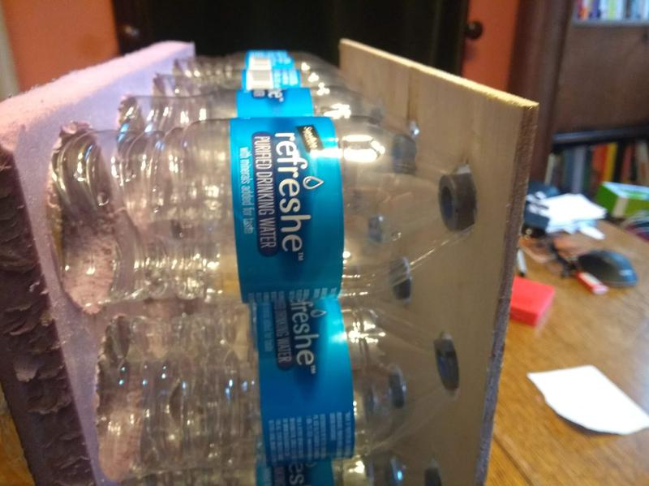
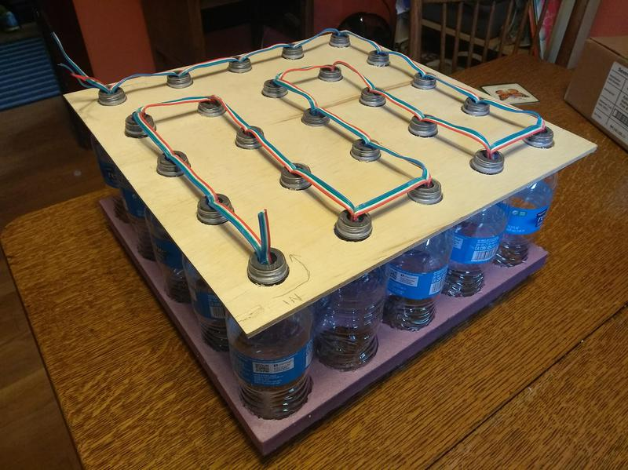
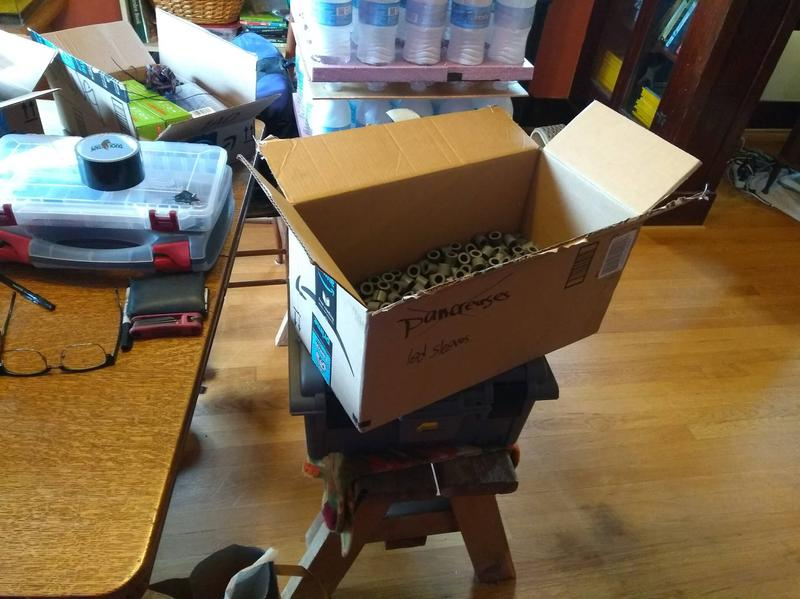

Where we left off: 2 and a half months to figure out how I'm gonna build this thing and then actually build it.
The project was probably (at least partially) greenlit because of the extensive technical drawings and docs for the Flaschen Taschen project, which I was planning to use as the project's display. My initial idea was to use the glass beer bottles like HZeller (OG Flaschen Taschen creator), but the only milk crates I could get in abundance were the rectangular 12" x 15" ones. My initial plan was to use 24oz beer bottles in a 6x4 pattern, which would have fit and probably worked great, except that clear beer bomber bottles (at least local to the PDX area) are usually either $5.99 a pop fancy cider or Corona, which is also a little spendy. At this point in the project, much time was spent in grocery stores, measuring bottles with my calipers. I got a lot of funny looks from customers and store staff.
In the end, to avoid having clear glass bottle aquisition become a major component of the project, I opted for those plastic 16.9 ounce mineral water bottles that humans should really stop using. If I had the choice, I would pick glass everytime. It's a better light diffusor, more consistent, and crates of glass bottles just have a more classic look than groupings of PET plastic. But there's pros and cons.
Pros:
- Cheap, basically sold as a loss leader to get people in the stores.
- Mostly pretty standard in size especially, the necks
- Light. I did the math and found that these bottles save me more than a ton of weight.
Cons:
- Can have inconsistent bottle wall thickness and main body circumfrence.
- Can look crappy when smashed up, or label is coming off
- Everyone hates these stupid bottles and they are actually serious problem for the environment.
So I wound up buying a bunch of these bottles and using them for everything from making coffee to aquarium water changes. It's actually not that wasteful a purchase if you are buying them as light diffusors instead of as a water source. Everyone in my house stayed very well hydrated for the whole course of the project, including the cats!
Moving on...
Now that I have chosen my diffusors, I still need:
- Something to keep my LEDs pointed at the bottom of the bottle.
- A way to hold the bottles together in groups like the crates in the OG Flaschen Taschen, because...

This isn't gonna cut it.
So after countless trips to Home Depot, measuring, testing, web searches for smarter ways of doing this, I came up with using drilled XPS insulation foam (painted black) for the front,

and a plywood backplate to hold the bottle necks in place.
 
Not too bad! The pull of the foam/plastic against bottle neck flange hooking the plywood, actually makes these things pretty stable with no real need for glue or even zipties.
Okay, so that's nice, but LEDs are a very directional light source, and we need them all consistently pointed at the bottom of the bottles. Here's the dimensions:
- LED diameter: 12mm (with little ~1mm flanges for panel mounting)
- Bottle neck diameter: about 21.5mm, consistent across brands/suppliers to about ±1mm.
How is that gonna work? Enter 1/2" schedule 80 conduit pipe. It has about a 12.7mm inner diameter and something like a 20mm outer diameter. I bought some during a Home Depot trip just to see how well it would work and...
  
turns out it works pretty well! Just cut it into 2cm sections, epoxy those badboys in, and your LED pixels will stay snugly in the bottles' necks, pointed directly at the flat bottom. Also, this PVC is only like $3 for each 10 foot section. I wound up getting around 100 feet of it, and the homie Jordan (machinist for this project) cut it up.
 Thanks, Jordan!
Now, 5x5 grid (25 bottle) led panels are nice, but since our ws2801 LED strings are 50 LEDs long they would have me doing a lot of wire cutting, splicing, and crimping. Way more than necessary, especially since we aren't using square crates full of bottles. There's no reason we can't do 5x10, or even 5x15 panels. Since 5x5 panels are 15"x15", switching to 5x15 would give me 15"x45". So I could make the whole thing 2 panels tall, and have a height of 90 inches (or just under 8 feet), which I decided was sufficiently overwhelming for such a small team (3 deep at this point) with sharp time constraints. Target width would be 7 panels, for a total pixel resolution of 30x35.
So that brings us just about here:
During the above process (and additionally procurement of components, which was also non trivial), I just didn't have time to figure out how I was gonna build the steering wheel assemblies for the proposed "giant etch-a-sketch" functionality. Luckily, early in the project I had gotten an Xbox Kinect for Niko to poke at, thinking maybe he could figure out how to do something cool with it and a wall of LEDs. Right around the time I was starting to wire up the first big 5x15 panels, Niko was getting data from the Kinect and really digging into the Freenect library's functionality. So I made an executive call, and pivoted the project to just being an gigantic low res screen that does cool interactive stuff with the Kinect. I changed the name to "Don't Sleep" (after a bar from one of my favorite MCs). It was a good move, turns out.
I could expand this post and talk about how to cut clean, perfectly round holes in XPS foam. But I kind of want to talk more about the software stuff I did on this project, so I think I'll keep it moving. We will talk about that more on the next post!